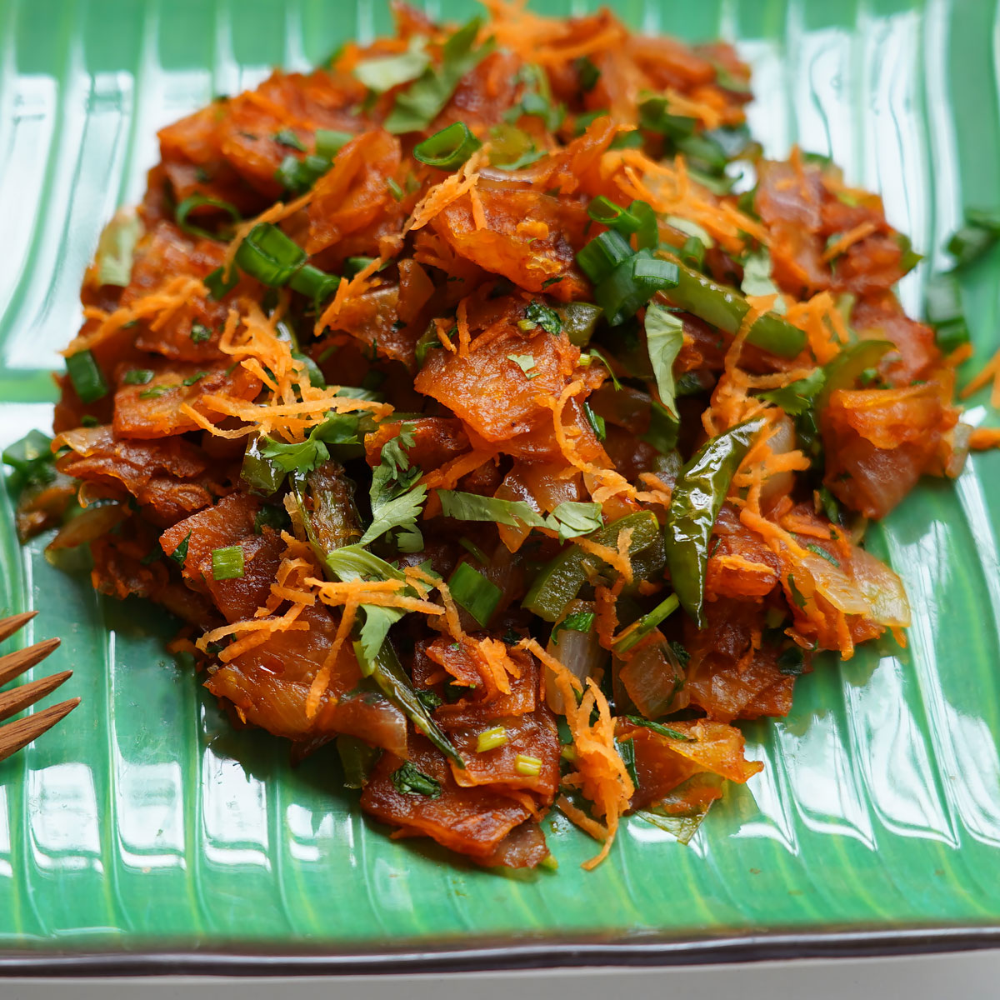

Biryani is a world-famous, celebratory rice dish made by layering fragrant long-grain
basmati rice with richly spiced, slow-cooked meat (like chicken or mutton) or vegetables. Infused with aromatics like saffron, caramelized onions, and fresh mint
it is gently cooked under steam (dum) so every grain of rice absorbs maximum flavor.
Chicken Chettinad
**Chicken Chettinad** is a fiery South Indian curry featuring tender chicken in a thick, dark gravy. It gets its signature bold heat and
rustic depth from a freshly roasted paste of black pepper,
fennel, and toasted coconut simmered with fresh curry leaves.
Mysore Masala Dosa
Mysore Masala Dosa is a rich, spicy upgrade to the classic dosa. The defining twist is a vibrant,
fiery garlic-red chili chutney slathered generously across the inside of the crisp, golden crepe before it is loaded with a savory potato filling and plenty of butter,
offering a perfect balance of bold heat and rich flavor.

Chilli Parotta
Chilli Parotta is a popular and addictive South Indian street food that features shredded, crispy pieces of flaky layered flatbread (parotta).
The bite-sized parotta pieces are deep-fried or pan-fried and then
tossed over high heat with crunchy onions, green bell peppers, ginger, garlic, and green chilies.